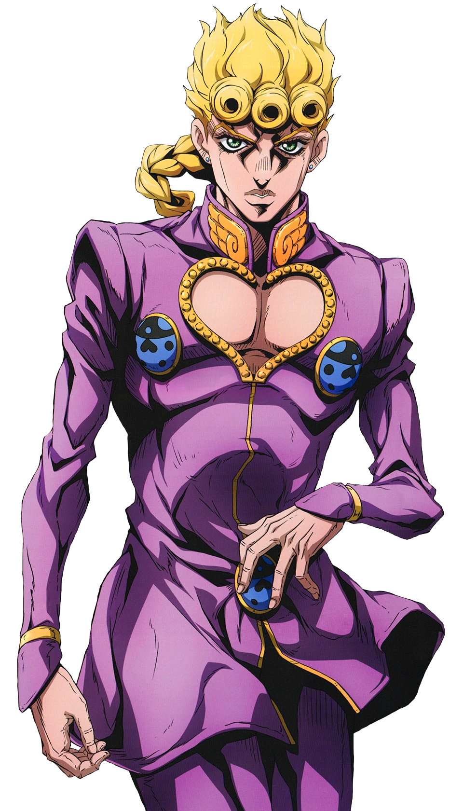

Фан Клуб Джорно Джованна
Фан Клуб Джорно Джованна
Кто это?
Джорно Джованна - протагонист Золотого ветра и пятый ДжоДжо в серии манги Невероятные приключения ДжоДжо. Как незаконнорожденный сын Дио Брандо, зачатый украденным телом Джонатана Джостара, Джорно Джованна - подросток, живущий в Италии. Он говорит о своем намерении присоединиться к могущественной банде Passione и о своей мечте стать "Ганг-стар" (объединение слов "Гангстер" и "Джостар"), чтобы восстановить добродетель продажной мафии. Джорно - это пользователь стенда с естественным происхождением, обладающий могущественным источником жизни Gold Experience в бою.(слева картинка с его участием)
ХарактеристикиСпасибо за внимание!
Ждите обновления сайта :)